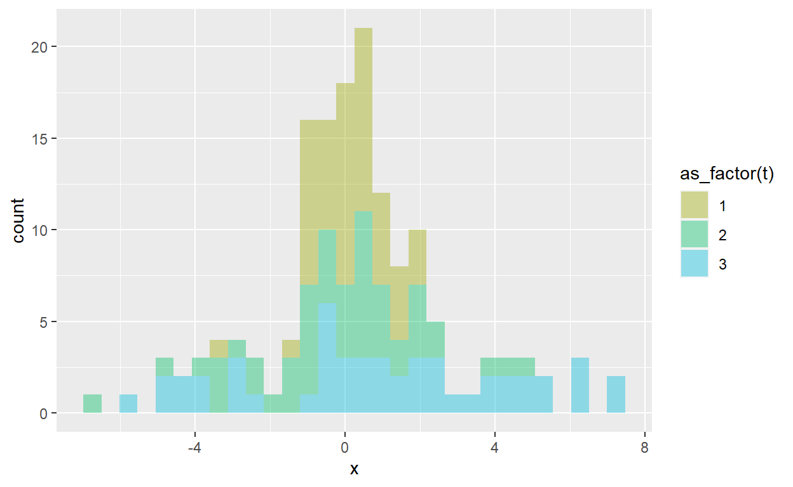

My progress in learning how to purrr
I previously shared my notes from datacamp’s Foundations of Functional Programming with purrr. The sequel is Intermediate Functional Programming with purrr and here are my notes; sometimes I capture notes to reinforce what I’ve learned especially if it’s difficult. BTW, why this package name? According to Hadley Wickham, purrr is “designed to make your pure functions purrr” [like a cat, I assume].
This course is taught by Colin Fay who is the author of A purrr cookbook. Recall the essential purrr function is map():
The .x can be a vector, list, or data frame. The .f element can be either a
An lambda (anonymous) function can also be written as a mapper. A mapper is an anonymous function with a one-sided formula. The following mappers are equivalent. They have a single parameter which can be referenced in three different ways. Here visits2017 is a 12-element list and each element is a integer vector of length 28 to 31; for example, visits2017[[1]][3] = 1544 visits to the website on January 31st:
For two parameters, we need to use either .x and .y, or ..1 and ..2. For three parameters, we can use ..1, ..2, and ..3 as folllows:
We can create a mapper object with as_mapper():
library(tidyverse)
# This is a classic function ...
round_mean <- function(x) {
round(mean(x))
}
# ... and this is an equivalent mapper object
round_mean_mapper <- as_mapper(~round(mean(.x)))
v1 <- c(1,2,3,4)
mean(v1); round_mean(v1); round_mean_mapper(v1)[1] 2.5[1] 2[1] 2Map employs purrr:pluck() to extract elements, which seems useful:
# Example from hadley's book
lst_lst <- list(
list(-1, x = 1, y = c(2), z = "a"),
list(-2, x = 4, y = c(5, 6), z = "b"),
list(-3, w = 25, x = 8, y = c(9, 10, 11))
)
# select by name
lst_lst %>% map("x") # selecting "x" from each list-element[[1]]
[1] 1
[[2]]
[1] 4
[[3]]
[1] 8[[1]]
[1] 2
[[2]]
[1] 5 6
[[3]]
[1] 8[[1]]
NULL
[[2]]
[1] 6
[[3]]
[1] 10The function set_names() is useful because it is easier to work with a named list. The keep() extracts elements that satisfy a condition, and its opposite is discard(). Each uses a predicate function per the help. A predicate returns TRUE of FALSE.
keep(.x, .p, …) where the predicate can be a mapper object
df_list <- list(iris, airquality) %>% map(head) # List of 2, 6 obs
df_list_2 <- map(df_list, ~ keep(.x, is.factor))
# the original list
str(df_list)List of 2
$ :'data.frame': 6 obs. of 5 variables:
..$ Sepal.Length: num [1:6] 5.1 4.9 4.7 4.6 5 5.4
..$ Sepal.Width : num [1:6] 3.5 3 3.2 3.1 3.6 3.9
..$ Petal.Length: num [1:6] 1.4 1.4 1.3 1.5 1.4 1.7
..$ Petal.Width : num [1:6] 0.2 0.2 0.2 0.2 0.2 0.4
..$ Species : Factor w/ 3 levels "setosa","versicolor",..: 1 1 1 1 1 1
$ :'data.frame': 6 obs. of 6 variables:
..$ Ozone : int [1:6] 41 36 12 18 NA 28
..$ Solar.R: int [1:6] 190 118 149 313 NA NA
..$ Wind : num [1:6] 7.4 8 12.6 11.5 14.3 14.9
..$ Temp : int [1:6] 67 72 74 62 56 66
..$ Month : int [1:6] 5 5 5 5 5 5
..$ Day : int [1:6] 1 2 3 4 5 6# the "cleaned" list ... and its strucure
df_list_2; str(df_list_2)[[1]]
Species
1 setosa
2 setosa
3 setosa
4 setosa
5 setosa
6 setosa
[[2]]
data frame with 0 columns and 6 rowsList of 2
$ :'data.frame': 6 obs. of 1 variable:
..$ Species: Factor w/ 3 levels "setosa","versicolor",..: 1 1 1 1 1 1
$ :'data.frame': 6 obs. of 0 variablesA predicate function returns either TRUE or FALSE. About the elements of a list, we can ask the following questions with the predicate:
Also
As explained in Advanced R, there are three types of higher-order functions depending on whether input/ouput is a function, f(), or a vector, c():
Here is an example of a functional that is similar to the example in Hadley’s book, except that I added two arguments.
# This "functional" takes a function as input and returns a vector
norm_vars <- function(f, n, ...) f(rnorm(n), ...)
vars <- c(0.95, 0.99, 0.999)
norm_vars(quantile, n = 100, probs = vars) 95% 99% 99.9%
1.671739 3.512787 3.777368 I can’t wait to explore purrr’s application to simulations. The potential feels limitless; I’ve been obsessing over the different approaches given the multi-dimensionality of simulations. Beyond map2() is pmap() and “… a data frame is a very important special case, in which case pmap() and pwalk() apply the function .f to each row. map_dfr(), pmap_dfr() and map2_dfc(), pmap_dfc() return data frames created by row-binding and column-binding respectively”.
So that is super cool. For example, below the parameters are specified in the params tibble, where I’ve defined 3 iterations of the normal distribution. The first iteration is the standard normal, the second iteration (aka, trial) increases the standard deviation to 2, and the third trial specifies a standard deviation of 3. Each trial is a sample of n_sample = 50. With pmap_dfr(), I create res_dh3 which is a “long” dataframe (150 obs * 3 variables) which I can pivot to wide version.
This is just one example of an elegant structure for the conduct of MCS. Params is a df that contains the parameters and mcs_normal() is the function the describes the simulation. We “map” the function to the parameters with pmap_dfr().
# Sample size versus Trial = Iteration (= Simulation)
# For example, 3 Iterations of Sample = 50
set.seed(17)
n_iters <- 3 # Iterations, aka, trials
params <- tibble(trial = 1:n_iters,
mu = c(0,0,1),
sd = c(1,2,3))
mcs_normal <- function(trial, mu, sd, n_sample = 100){
tibble(
t = trial,
n = 1:n_sample,
x = rnorm(n = n_sample, mean = mu, sd = sd)
)
}
res_dh3 <- pmap_dfr(params, mcs_normal, n_sample = 50)
str(res_dh3) # 150 = 50 samples * 3 trialstibble [150 × 3] (S3: tbl_df/tbl/data.frame)
$ t: int [1:150] 1 1 1 1 1 1 1 1 1 1 ...
$ n: int [1:150] 1 2 3 4 5 6 7 8 9 10 ...
$ x: num [1:150] -1.015 -0.0796 -0.233 -0.8173 0.7721 ...pivot_dh3 <- res_dh3 %>% pivot_wider(names_from = t, values_from = x)
head(pivot_dh3)# A tibble: 6 × 4
n `1` `2` `3`
<int> <dbl> <dbl> <dbl>
1 1 -1.02 0.631 1.13
2 2 -0.0796 4.88 -0.704
3 3 -0.233 1.10 6.47
4 4 -0.817 -0.0585 2.30
5 5 0.772 -1.66 -3.06
6 6 -0.166 2.49 4.46 res_dh3 %>% ggplot(aes(x = x, fill = as_factor(t))) +
geom_histogram(alpha = 0.4) +
scale_fill_discrete(h = c(90, 210))
In the tidyverse, functions that take data and return a value are called VERBS. Purrr also has several adverbs (i.e., functions that return a modified function) including two that handle errors: possibly() and safely(). This code is not actually run here because it tends to hang up.
urls <- c("https://thinkr.fr",
"https://colinfay.me",
"http://not_working.org", # this URL does not work
"https://en.wikipedia.org",
"http://cran.r-project.org/",
"https://not_working_either.org") # this URL also does not work
# Create a safely version of read_lines()
# then map safe_read to the urls vector
safe_read <- safely(read_lines)
res <- map(urls, safe_read)
named_res <- set_names(res, urls)
# Extracts "error" element of each sub-list
map(named_res, "error") Clean code is light, readable, interpretable, and maintainable.
The compose() function passes from right to left. I admit that I prefer to use pipes, so the advantage of compose() is not obvious to me. Below I wrote a simple example to cover the raw price series, prices_raw, into the standard deviation of daily log returns (aka, daily volatility). Notice that I also used the partial() “adverb” function that prefills arguments, just for illustration’s sake.
prices_raw <- c(10, 11, 9, 8, 11, 12, 15, 14, 13, 15, 17)
wealth_ratio <- function(x) {
d1 <- lead(x) / x
d1[-length(d1)] # remove final NA
}
sd_na_rm <- partial(sd, na.rm = TRUE)
# with pipes
prices_raw %>% wealth_ratio() %>% log() %>% sd_na_rm[1] 0.1633814# with compose
sd_composed <- compose(sd_na_rm, log, wealth_ratio)
sd_composed(prices_raw)[1] 0.1633814sd_composed # and we can see the composed function<composed>
1. function(x) {
d1 <- lead(x) / x
d1[-length(d1)] # remove final NA
}
<bytecode: 0x00000159ac4d4fb0>
2. function (x, base = exp(1))
.Primitive("log")(x, base)
3. <partialised>
function (...)
sd(na.rm = TRUE, ...)A dataframe (tibble) is a list of equal-length vectors. These vectors are typically atomic (e.g., character, numeric) as they are observations per the row. However, the vector (i.e., column) can be a list and, inside the dataframe, that’s naturally called a list column. See Jenny Bryan’s explanation.
To illustrate, below I’ll regress mpg against wt in the mtcars dataset.
summary_lm <- compose(summary, lm) # aka, lm() %>% summary()
# overall regression R^2
summary_lm(mpg ~ wt, data = mtcars)$r.squared[1] 0.7528328# Now let's group by auto vs manual transmission
# and regress within each group
mtcars$am <- factor(mtcars$am, labels = c("auto", "man"))
mtcars %>%
group_by(am) %>%
nest() %>%
mutate(data_lm = map(data, ~summary_lm(mpg ~ wt, data = .x)),
data_r2 = map(data_lm, "r.squared")) %>%
unnest(cols = data_r2)# A tibble: 2 × 4
# Groups: am [2]
am data data_lm data_r2
<fct> <list> <list> <dbl>
1 man <tibble [13 × 10]> <smmry.lm> 0.826
2 auto <tibble [19 × 10]> <smmry.lm> 0.589In case that’s not obvious, I’ll break that down:
step1 <- mtcars %>%
group_by(am) %>%
nest()
# step1 is a 2*2 tibble and where
# its second column is a list column
glimpse(step1)Rows: 2
Columns: 2
Groups: am [2]
$ am <fct> man, auto
$ data <list> [<tbl_df[13 x 10]>], [<tbl_df[19 x 10]>]# data_lm is also a list column as the lm regression produces a list
# data_r2 is also list but each is a list of 1 numeric
step2 <- step1 %>% mutate(data_lm = map(data, ~summary_lm(mpg ~ wt, data = .x)),
data_r2 = map(data_lm, "r.squared"))
step2$data_r2 <- unlist(step2$data_r2)
step2# A tibble: 2 × 4
# Groups: am [2]
am data data_lm data_r2
<fct> <list> <list> <dbl>
1 man <tibble [13 × 10]> <smmry.lm> 0.826
2 auto <tibble [19 × 10]> <smmry.lm> 0.589In the way above, map() naturally creates list columns when we conduct a row-wise map, versus the perhaps more intuitive column-wise map. I actually first learned this in Matt Dancho’s amazing course DS4B 101-R where he showed me how to conduct row-wise mapping.
library(here); library(fs); library(readxl)
here::i_am(path = "intermediate-functional-programming-with-purrr.Rmd")
xls_path <- here("xls_subdir")
excel_paths_tbl <- fs::dir_info(xls_path)
paths_chr <- excel_paths_tbl %>% pull(path)
excel_tbl <- excel_paths_tbl %>%
select(path) %>%
mutate(data = path %>% map(read_excel))
excel_tbl# A tibble: 3 × 2
path data
<fs::path> <list>
1 …te-functional-programming-with-purrr/xls_subdir/bikes.xlsx <tibble>
2 …unctional-programming-with-purrr/xls_subdir/bikeshops.xlsx <tibble>
3 …nctional-programming-with-purrr/xls_subdir/orderlines.xlsx <tibble>I hope that’s an interesting summary. For myself, mastery of purrr continues to require effort, but I think it will be a good investment, especially when I dive into tidymodels.